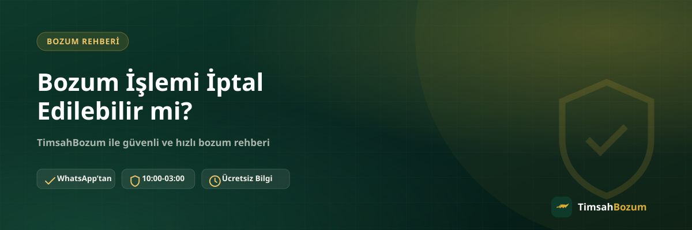

Bozum işlemine başladıktan sonra fikir değiştirebilir misin, yoksa bilgini paylaştığın an iş bağlanmış mı olur? Bu soru özellikle ilk kez işlem yapacaklar için netlik istenen bir konu. Bu yazıda bozum işleminin hangi aşamasına kadar iptal edilebileceğini, hangi noktadan sonra geri dönüşün mümkün olmadığını ve iptal etmek istediğinde ne yapman gerektiğini anlatıyoruz.
Bozum İşleminde İptal Hangi Aşamaya Kadar Mümkün?
Bozum süreci birkaç net aşamadan oluşur: bilgi paylaşımı, oran teyidi, onay ve son olarak ödeme. Sürecin başındaki aşamalarda geri adım atmak tamamen senin elinde; ilerleyen aşamalarda ise işlemin doğası gereği geri dönüş mümkün olmayabilir. Hangi aşamada olduğunu bilmek, "iptal edebilir miyim" sorusuna doğru cevabı bulmanı sağlar.
Oran Teyidinden Önce İptal Edebilir misin?
Evet. Kod veya bakiye bilgini paylaşman, hiçbir taahhüt altına girdiğin anlamına gelmez. Güncel oranı öğrenip işlemden vazgeçmek istersen bu noktada tamamen serbestsin; kodun veya bakiyenin henüz işleme alınmamış olması yeterli, süreç orada sessizce kapanır.
Bilgini Paylaştıktan Sonra Vazgeçebilir misin?
Oran sana bildirildikten sonra bile onay vermeden önce vazgeçme hakkın devam eder. Oran teyidi bir sözleşme imzalamak değil, sana bilgi verilmesidir; bu bilgiyi aldıktan sonra "hayır, teşekkürler" demek herhangi bir yaptırımı gerektirmez.
Onay Verdikten Sonra İptal Mümkün mü?
Onay verip işlemi başlattıktan, yani kod veya bakiye karşı tarafça işleme alındıktan sonra süreç geri döndürülemez hale gelir. Kod tabanlı hizmetlerde (Razer Gold, iTunes) kod bir kez değerlendirildiğinde bu adım tersine çevrilemez; bakiye tabanlı hizmetlerde de (Pokus, Paycell, Vodafone, Türk Telekom, Turkcell mobil ödeme) bakiye düşürüldükten sonra aynı durum geçerlidir.
Ödeme Yapıldıktan Sonra İptal İstenebilir mi?
Anlaşılan tutar WhatsApp üzerinden görüşülen yöntemle sana ulaştırıldıysa işlem tamamlanmış sayılır. Bu aşamadan sonra gündeme gelebilecek şey bir iptal talebi değil, olası bir hata ya da eksiklik varsa bunun düzeltilmesidir. İki durum birbirinden farklı işler: iptal işlemi henüz sonuçlanmadan yapılan bir vazgeçmedir, düzeltme ise tamamlanmış bir işlemdeki bir aksaklığın giderilmesidir.
Yanlış veya Eksik Bilgi Paylaştıysan Ne Yapmalısın?
İptal etmek istemene gerek kalmadan, doğru bilgiyi paylaşarak süreci düzeltebilirsin. Yanlış bir kod karakteri ya da eski tarihli bir bakiye ekran görüntüsü paylaştıysan, bunu fark ettiğin an doğrusunu WhatsApp'tan iletmen yeterli; bu bir iptal değil, basit bir düzeltme aşamasıdır ve süreç kaldığı yerden devam eder.
Birden Fazla İşlemden Sadece Birini İptal Edebilir misin?
Aynı mesajda birden fazla kod veya bakiye bildirdiysen, bunlardan sadece birinden vazgeçmek istemen mümkün. Örneğin hem bir Razer Gold kodu hem de bir Paycell bakiyesi paylaştıysan ve sadece Paycell işleminden vazgeçmek istiyorsan, bunu WhatsApp'ta net şekilde belirtmen yeterli. Her işlem kendi aşamasında değerlendirilir; birinin onaylanmış olması diğerinin iptal edilmesini engellemez.
Bozum İşlemini İptal Etmek İstersen Ne Yapmalısın?
İptal etmek istediğinde tek yapman gereken, işlem yaptığın WhatsApp hattından (+90 543 887 21 71) durumu net şekilde belirtmek. Kod veya bakiyen henüz işleme alınmadıysa bu talep hemen karşılık bulur ve süreç orada sonlanır. Yazılı olarak "vazgeçtim" ya da "iptal etmek istiyorum" demen, konuşmanın kaydı için de faydalı olur ve olası bir karışıklığı önler.
İptal Etmeden Önce Nelere Dikkat Etmelisin?
İptal etmeden önce, gerçekten oran ya da süreçle ilgili bir tereddüdün mü var, yoksa yanlış anlaşılan bir nokta mı var buna bakmak faydalı olabilir. Çoğu zaman "iptal" gibi görünen durum, aslında oranın tekrar teyit edilmesi ya da tek bir detayın netleştirilmesiyle çözülebiliyor. Sorunu netleştirmeden aceleyle iptal etmek, ihtiyacın olan işlemi baştan başlatmak zorunda kalmana yol açabilir.
Bu Kural Tüm Hizmetler İçin Aynı mı?
Evet, iptal mantığı hizmet türünden bağımsız olarak aynı işler: onay ve işleme alma öncesinde vazgeçme hakkın var, sonrasında yok. Fark sadece "işleme alma" anının neyi ifade ettiğinde ortaya çıkıyor: kod tabanlı hizmetlerde bu an kodun değerlendirilmesi, bakiye tabanlı hizmetlerde ise bakiyenin düşürülmesidir. Örneğin Paycell bozdurma işleminde onay öncesi vazgeçebilirken, Razer Gold bozdurma işleminde de aynı kural geçerli, tek fark kodun tam değeri üzerinden tek seferde değerlendirilmesi.
İptal Ettikten Sonra Tekrar Başvurabilir misin?
İptal ettiğin bir işlem senin için herhangi bir kısıtlama oluşturmaz. Aynı kodu veya bakiyeyi daha sonra tekrar değerlendirmek istersen, güncel oranı yeniden teyit ederek işlemi baştan başlatabilirsin. Tek şart, daha önce iptal ettiğin kod ya da bakiyenin hâlâ geçerli ve kullanılmamış olması; kod tabanlı bir işlemde kodun değeri değişmez, bakiye tabanlı bir işlemde ise güncel bakiyeni tekrar bildirmen yeterli olur.
İptal Sık Karşılaşılan Bir Durum mu?
Aslında hayır. Çoğu kullanıcı oran teyidini aldıktan sonra işlemi tamamlamayı tercih ediyor, çünkü teyit aşaması zaten bir taahhüt yaratmıyor ve karar özgürlüğü tamamen kullanıcıda kalıyor. İptal talepleri genelde yanlış hesaplanmış bir tutar beklentisi ya da farklı bir platformdan gelen yanlış bilgi yüzünden ortaya çıkıyor; bu yüzden işleme başlamadan önce güncel oranı WhatsApp'tan teyit etmek, ileride iptal ihtiyacı duymanı büyük ölçüde önler.
İşlemini başlatmadan önce ya da sürecin herhangi bir aşamasında bir sorun yaşarsan, resmi WhatsApp hattımıza yazarak durumu netleştirebilirsin.
İlgili Yazılar
- Bozum İşlemi Ne Zaman Tamamlanır, Süreç Nasıl İşler?
- Bozum Yaparken En Sık Yapılan 7 Hata
- Bozum Oranları Neden Hizmetten Hizmete Değişir?